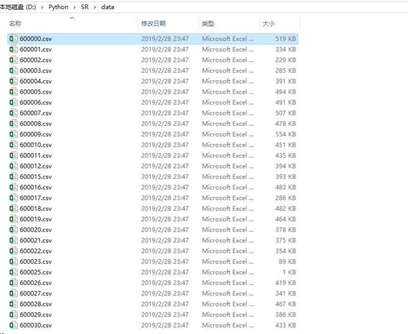

<!DOCTYPE html>
<html>
<head><meta name="generator" content="Hexo 3.8.0">
  <meta charset="utf-8">
  
  <title>Aloha | Gaga酱的奇思妙想</title>
  <meta name="viewport" content="width=device-width, initial-scale=1, maximum-scale=1">
  
    <meta name="keywords" content="萌萌の嘎嘎">
  
  
  
  
  <meta name="description" content="最近炒股开心的小李酱，“证券化率”是不是可以爬起来呢~">
<meta name="keywords" content="python,认真学习の日常,爬虫">
<meta property="og:type" content="article">
<meta property="og:title" content="磨刀霍霍：爬爬爬爬爬爬虫爬起来~">
<meta property="og:url" content="http://yoursite.com/2019/02/28/磨刀霍霍：爬爬爬爬爬爬虫爬起来/index.html">
<meta property="og:site_name" content="Gaga酱の奇思妙想">
<meta property="og:description" content="最近炒股开心的小李酱，“证券化率”是不是可以爬起来呢~">
<meta property="og:locale" content="zh-Hans">
<meta property="og:image" content="http://yoursite.com/2019/02/28/磨刀霍霍：爬爬爬爬爬爬虫爬起来/1.png">
<meta property="og:image" content="http://yoursite.com/2019/02/28/磨刀霍霍：爬爬爬爬爬爬虫爬起来/2.png">
<meta property="og:image" content="http://yoursite.com/2019/02/28/磨刀霍霍：爬爬爬爬爬爬虫爬起来/3.png">
<meta property="og:image" content="http://yoursite.com/2019/02/28/磨刀霍霍：爬爬爬爬爬爬虫爬起来/4.png">
<meta property="og:updated_time" content="2019-04-10T17:00:03.427Z">
<meta name="twitter:card" content="summary">
<meta name="twitter:title" content="磨刀霍霍：爬爬爬爬爬爬虫爬起来~">
<meta name="twitter:description" content="最近炒股开心的小李酱，“证券化率”是不是可以爬起来呢~">
<meta name="twitter:image" content="http://yoursite.com/2019/02/28/磨刀霍霍：爬爬爬爬爬爬虫爬起来/1.png">
  
  <link rel="icon" href="/css/images/favicon.png">
  
    <link href="//fonts.googleapis.com/css?family=Source+Code+Pro" rel="stylesheet" type="text/css">
  
  <link href="https://fonts.googleapis.com/css?family=Open+Sans|Montserrat:700" rel="stylesheet" type="text/css">
  <link href="https://fonts.googleapis.com/css?family=Roboto:400,300,300italic,400italic" rel="stylesheet" type="text/css">
  <link href="//cdn.bootcss.com/font-awesome/4.6.3/css/font-awesome.min.css" rel="stylesheet">
  <style type="text/css">
    @font-face{font-family:futura-pt;src:url(https://use.typekit.net/af/9749f0/00000000000000000001008f/27/l?subset_id=2&fvd=n5) format("woff2");font-weight:500;font-style:normal;}
    @font-face{font-family:futura-pt;src:url(https://use.typekit.net/af/90cf9f/000000000000000000010091/27/l?subset_id=2&fvd=n7) format("woff2");font-weight:500;font-style:normal;}
    @font-face{font-family:futura-pt;src:url(https://use.typekit.net/af/8a5494/000000000000000000013365/27/l?subset_id=2&fvd=n4) format("woff2");font-weight:lighter;font-style:normal;}
    @font-face{font-family:futura-pt;src:url(https://use.typekit.net/af/d337d8/000000000000000000010095/27/l?subset_id=2&fvd=i4) format("woff2");font-weight:400;font-style:italic;}</style>
    
  <link rel="stylesheet" id="athemes-headings-fonts-css" href="//fonts.googleapis.com/css?family=Yanone+Kaffeesatz%3A200%2C300%2C400%2C700&amp;ver=4.6.1" type="text/css" media="all">

  <link rel="stylesheet" id="athemes-headings-fonts-css" href="//fonts.googleapis.com/css?family=Oswald%3A300%2C400%2C700&amp;ver=4.6.1" type="text/css" media="all">
  <link rel="stylesheet" href="/css/style.css">

  <script src="/js/jquery-3.1.1.min.js"></script>

  <!-- Bootstrap core CSS -->
  <link rel="stylesheet" href="/css/bootstrap.css">
  <link rel="stylesheet" href="/css/fashion.css">
  <link rel="stylesheet" href="/css/glyphs.css">

</head>
</html>


  <body data-spy="scroll" data-target="#toc" data-offset="50">


  
  
  <div class="site-header-image">
    
  </div>

  <div id="header-blur" class="site-header-image blur" style="position: absolute; top:0; height: 207px; min-height: 207px; min-width: 100%;">
    
  </div>

  <script>
        var imgUrls = "css/images/pic0.jpg,css/images/pic2.png,css/images/pic4.jpg".split(",");
        var random = Math.floor((Math.random() * imgUrls.length ));
        if (imgUrls[random].startsWith('http') || imgUrls[random].indexOf('://') >= 0) {
          document.getElementById("originBg").src=imgUrls[random];
          document.getElementById("blurBg").src=imgUrls[random];
        } else {
          document.getElementById("originBg").src='/' + imgUrls[random];
          document.getElementById("blurBg").src='/' + imgUrls[random];
        }
    </script>


<header id="allheader" class="site-header" role="banner" style="width: 100%; position: absolute; top:0; background: rgba(255,255,255,.8);">
  <div class="clearfix container">
      <div class="site-branding">

          <h3 class="site-title">
            
              <a href="/" title="Gaga酱の奇思妙想" rel="home"> Gaga酱の奇思妙想 </a>
            
          </h3>
          
          
            <div class="site-description">深水静流</div>
          
            
          <nav id="main-navigation" class="main-navigation" role="navigation">
            <a class="nav-open">Menu</a>
            <a class="nav-close">Close</a>

            <div class="clearfix sf-menu">
              <ul id="main-nav" class="menu sf-js-enabled sf-arrows" style="touch-action: pan-y;">
                    
                      <li class="menu-item menu-item-type-custom menu-item-object-custom menu-item-home menu-item-1663"> <a class href="/">冲鸭❤</a> </li>
                    
                      <li class="menu-item menu-item-type-custom menu-item-object-custom menu-item-home menu-item-1663"> <a class href="/archives">archives❤</a> </li>
                    
                      <li class="menu-item menu-item-type-custom menu-item-object-custom menu-item-home menu-item-1663"> <a class href="/categories">碎碎念的基本法❤</a> </li>
                    
                      <li class="menu-item menu-item-type-custom menu-item-object-custom menu-item-home menu-item-1663"> <a class href="/tags">tags❤</a> </li>
                    
                      <li class="menu-item menu-item-type-custom menu-item-object-custom menu-item-home menu-item-1663"> <a class href="/about">岁月如歌❤</a> </li>
                    
                      <li class="menu-item menu-item-type-custom menu-item-object-custom menu-item-home menu-item-1663"> <a class href="/books">阅❤</a> </li>
                    
                      <li class="menu-item menu-item-type-custom menu-item-object-custom menu-item-home menu-item-1663"> <a class href="/movies">影❤</a> </li>
                    
              </ul>
            </div>
          </nav>

      </div>
  </div>
</header>


  <div id="container">
    <div id="wrap">
            
      <div id="content" class="outer">
        
          <section id="main" style="float:none;"><article id="w-磨刀霍霍：爬爬爬爬爬爬虫爬起来" style="width: 66%; float:left;" class="article article-type-w" itemscope itemprop="blogPost">
  <div id="articleInner" class="clearfix post-1016 post type-post status-publish format-standard has-post-thumbnail hentry category-template-2 category-uncategorized tag-codex tag-edge-case tag-featured-image tag-image tag-template">
    
    
      <header class="article-header">
        
  
    <h1 class="thumb" itemprop="name">
      磨刀霍霍：爬爬爬爬爬爬虫爬起来~
    </h1>
  

      </header>
    
    <div class="article-meta">
      
	<a href="/2019/02/28/磨刀霍霍：爬爬爬爬爬爬虫爬起来/" class="article-date">
	  <time datetime="2019-02-28T15:49:23.000Z" itemprop="datePublished">February 28, 2019</time>
	</a>

      
	<span class="ico-folder"></span>
    <a class="article-category-link" href="/categories/小李の放学后/">小李の放学后</a>
 
      
    </div>
    <div class="article-entry" itemprop="articleBody">
      
        <p></p>
<h4 id="写在前面的叨叨"><a href="#写在前面的叨叨" class="headerlink" title="写在前面的叨叨"></a>写在前面的叨叨</h4><p>折腾了这么久，我终于在喝完一听快乐肥宅水后下定决心来学习写爬虫了。</p>
<p>目标很简单，因为我想要爬一下“证券化率”，然后可视化输出结果。</p>
<p>证券化率的基础就是上市公司的总市值，对于证券化率其实还蛮多说法的，比如雪球的这篇文。<br><a href="https://xueqiu.com/2846285364/78228727" target="_blank" rel="noopener">中国的真实证券化率是多少？</a></p>
<p>爬虫对于证券类的分析来说，其实已经是司空见惯了，但是作为菜鸟小股民，希望自己在写完这个爬虫之后也对股票有更深的认识吧，然后能赚钱就更好啦~</p>
<p>找了一个相对好入门的案例，来作为学习的范本。<br><a href="https://www.cnblogs.com/dennis-liucd/p/7669161.html" target="_blank" rel="noopener">Python爬虫抓取东方财富网股票数据并实现MySQL数据库存储</a></p>
<h4 id="那就开工吧"><a href="#那就开工吧" class="headerlink" title="那就开工吧~"></a>那就开工吧~</h4><h5 id="准备动作"><a href="#准备动作" class="headerlink" title="准备动作"></a>准备动作</h5><p>主要使用的工具和模块包括：<code>Anaconda</code> <code>Pandas</code> <code>MySQL</code></p>
<ul>
<li><strong>Anaconda</strong>是之前就安装好了的，具体过程可以参考这个安装流程。<br>  <a href="https://www.jianshu.com/p/eaee1fadc1e9" target="_blank" rel="noopener">Anaconda完全入门指南</a></li>
<li><p><strong>Pandas</strong>是在Anaconda中用命令安装好的，还得摸索下这个工具。</p>
  <figure class="highlight cmake"><table><tr><td class="code"><pre><span class="line">pip <span class="keyword">install</span> pandas</span><br></pre></td></tr></table></figure>
</li>
<li><p><strong>MySQL</strong>以前写PHP的时候，都习惯直接用Wamp打包处理了，这会儿就来摸索下单独安装，安装教程参考这个。<br>  <a href="https://www.cnblogs.com/reyinever/p/8551977.html" target="_blank" rel="noopener">windows下安装Mysql—图文详解</a></p>
</li>
</ul>
<h5 id="整理思路"><a href="#整理思路" class="headerlink" title="整理思路"></a>整理思路</h5><p>一共是四个步骤：</p>
<ol>
<li>用爬虫将数据抓取到本地csv文件中</li>
<li>将csv文件内的数据导入到数据库中</li>
<li>MySQL数据库内进行查询</li>
</ol>
<p>我们今天的目标是完成第一步—-因为MySQL还没部署完毕…明天继续~</p>
<h5 id="爬虫启动"><a href="#爬虫启动" class="headerlink" title="爬虫启动"></a>爬虫启动</h5><figure class="highlight python"><table><tr><td class="code"><pre><span class="line"><span class="comment">#导入需要使用到的模块</span></span><br><span class="line"><span class="keyword">import</span> urllib</span><br><span class="line"><span class="keyword">import</span> re</span><br><span class="line"><span class="keyword">import</span> pandas <span class="keyword">as</span> pd</span><br><span class="line"><span class="keyword">import</span> pymysql</span><br><span class="line"><span class="keyword">import</span> os</span><br><span class="line"></span><br><span class="line"><span class="comment">#爬虫抓取网页函数</span></span><br><span class="line"><span class="function"><span class="keyword">def</span> <span class="title">getHtml</span><span class="params">(url)</span>:</span></span><br><span class="line">    html = urllib.request.urlopen(url).read()</span><br><span class="line">    html = html.decode(<span class="string">'gbk'</span>)</span><br><span class="line">    <span class="keyword">return</span> html</span><br><span class="line"></span><br><span class="line"><span class="comment">#抓取网页股票代码函数</span></span><br><span class="line"><span class="function"><span class="keyword">def</span> <span class="title">getStackCode</span><span class="params">(html)</span>:</span></span><br><span class="line">    s = <span class="string">r'&lt;li&gt;&lt;a target="_blank" href="http://quote.eastmoney.com/\S\S(.*?).html"&gt;'</span></span><br><span class="line">    pat = re.compile(s)</span><br><span class="line">    code = pat.findall(html)</span><br><span class="line">    <span class="keyword">return</span> code</span><br><span class="line">Url = <span class="string">'http://quote.eastmoney.com/stocklist.html'</span><span class="comment">#东方财富网股票数据连接地址</span></span><br><span class="line">filepath = <span class="string">'D:\\data\\'</span><span class="comment">#定义数据文件保存路径</span></span><br><span class="line"><span class="comment">#实施抓取</span></span><br><span class="line">code = getStackCode(getHtml(Url)) </span><br><span class="line"><span class="comment">#获取所有股票代码（以6开头的，应该是沪市数据）集合</span></span><br><span class="line">CodeList = []</span><br><span class="line"><span class="keyword">for</span> item <span class="keyword">in</span> code:</span><br><span class="line">    <span class="keyword">if</span> item[<span class="number">0</span>]==<span class="string">'6'</span>:</span><br><span class="line">        CodeList.append(item)</span><br><span class="line"><span class="comment">#抓取数据并保存到本地csv文件</span></span><br><span class="line"><span class="keyword">for</span> code <span class="keyword">in</span> CodeList:</span><br><span class="line">    print(<span class="string">'正在获取股票%s数据'</span>%code)</span><br><span class="line">    url = <span class="string">'http://quotes.money.163.com/service/chddata.html?code=0'</span>+code+\</span><br><span class="line">        <span class="string">'&amp;end=20161231&amp;fields=TCLOSE;HIGH;LOW;TOPEN;LCLOSE;CHG;PCHG;TURNOVER;VOTURNOVER;VATURNOVER;TCAP;MCAP'</span></span><br><span class="line">    urllib.request.urlretrieve(url, filepath+code+<span class="string">'.csv'</span>)</span><br></pre></td></tr></table></figure>
<p>我们看一下源代码是这样的，注释写的很清楚，我们来拆解一下。</p>
<ul>
<li>引入模块，包括pandas和re等</li>
<li>分模块写函数 <ul>
<li><code>getHtml()</code>用于抓取网页，读取网页源码</li>
<li><code>getStackCode()</code>对抓取到的源码读取，拆解出</li><li><a></a></li>结构里面的链接，打开Url对应的地址，看到对应的图形结构，红框就是需要命中的目标。</ul></li>
</ul>


<p></p>
<p>根据代码，原作者只截取了6开头的大盘股的list存储入数组。<br>然后用GET方法获取每个代码对应的股票的数据，对每组数据进行存储。</p>
<h5 id="测试代码"><a href="#测试代码" class="headerlink" title="测试代码"></a>测试代码</h5><p>将代码放到本地跑一下，看下结果。<br>正常应该是会下载数据到文件夹下，但是报错了。</p>
<p><br>应该是request模块下的<code>urlretrieve</code>函数报错。<br>关联语句是<br><figure class="highlight stylus"><table><tr><td class="code"><pre><span class="line">urllib<span class="selector-class">.request</span><span class="selector-class">.urlretrieve</span>(url, filepath+code+<span class="string">'.csv'</span>)</span><br></pre></td></tr></table></figure></p>
<p>关于<code>urlretrieve()</code>这个方法，因为没有使用过，所以来看下详解。<br><a href="https://www.cnblogs.com/qqhfeng/p/5785373.html" target="_blank" rel="noopener">Python urllib模块urlopen()与urlretrieve()详解</a></p>
<p><strong>urlretrieve()用于直接将远程数据下载到本地。</strong><br><figure class="highlight inform7"><table><tr><td class="code"><pre><span class="line">urllib.urlretrieve(url<span class="comment">[, filename<span class="comment">[, reporthook<span class="comment">[, data]</span>]</span>]</span>)</span><br></pre></td></tr></table></figure></p>
<blockquote>
<p><strong>参数说明</strong>：<br><code>url</code>：外部或者本地url<br><code>filename</code>：指定了保存到本地的路径（如果未指定该参数，urllib会生成一个临时文件来保存数据）；<br><code>reporthook</code>：是一个回调函数，当连接上服务器、以及相应的数据块传输完毕的时候会触发该回调。我们可以利用这个回调函数来显示当前的下载进度。<br><code>data</code>：指post到服务器的数据。该方法返回一个包含两个元素的元组(filename, headers)，filename表示保存到本地的路径，header表示服务器的响应头。</p>
</blockquote>
<p>会过来看我们的函数语句↓<br><figure class="highlight stylus"><table><tr><td class="code"><pre><span class="line">urllib<span class="selector-class">.request</span><span class="selector-class">.urlretrieve</span>(url, filepath+code+<span class="string">'.csv'</span>)</span><br></pre></td></tr></table></figure></p>
<p>指定了地址和文件名（保存到本地的路径），所以我试试在本地新建一个<code>600000.csv</code>来测试下结果。<br>然后发现并没有结果。<br>然后发现自己干了很蠢的事情…..<br>emmm….其实是我的路径写错了，然后实验结果是这样的~</p>
<p></p>
<p></p>
<h5 id="未完待续"><a href="#未完待续" class="headerlink" title="未完待续~"></a>未完待续~</h5><p>现在就坐等爬完啦~然后安装MySQL,然后导入数据库。<br>明天来尝试下自己复写一下这个爬虫~<br>主要涉及的内容是网页结果和模块方法的使用。<br>包括了：</p>
<ul>
<li>request.urlopen() </li>
<li>re.compile()</li>
<li>request.urlretriev()</li>
</ul>
<p>要好好学习~</p>
      
    </div>
    <footer class="entry-meta entry-footer">
      
	<span class="ico-folder"></span>
    <a class="article-category-link" href="/categories/小李の放学后/">小李の放学后</a>

      
  <span class="ico-tags"></span>
  <ul class="article-tag-list"><li class="article-tag-list-item"><a class="article-tag-list-link" href="/tags/python/">python</a></li><li class="article-tag-list-item"><a class="article-tag-list-link" href="/tags/爬虫/">爬虫</a></li><li class="article-tag-list-item"><a class="article-tag-list-link" href="/tags/认真学习の日常/">认真学习の日常</a></li></ul>

      
        
	<div id="comment">
	
	<!-- 多说评论框 start -->
	 <div class="ds-thread" data-thread-key="/2019/02/28/磨刀霍霍：爬爬爬爬爬爬虫爬起来/" data-title="磨刀霍霍：爬爬爬爬爬爬虫爬起来~" data-url="http://yoursite.com/2019/02/28/磨刀霍霍：爬爬爬爬爬爬虫爬起来/"></div>
	<!-- 多说评论框 end -->
	<!-- 多说公共JS代码 start (一个网页只需插入一次) -->
	<script type="text/javascript">
	var duoshuoQuery = {short_name:"iTimeTraveler"};
	  (function() {
	    var ds = document.createElement('script');
	    ds.type = 'text/javascript';ds.async = true;
	    ds.src = (document.location.protocol == 'https:' ? 'https:' : 'http:') + '//static.duoshuo.com/embed.js';
	    ds.charset = 'UTF-8';
	    (document.getElementsByTagName('head')[0] 
	     || document.getElementsByTagName('body')[0]).appendChild(ds);
	  })();
	  </script>
	<!-- 多说公共JS代码 end -->
	
	</div>
	<link rel="stylesheet" href="/css/comment.css">


      
    </footer>
    <hr class="entry-footer-hr">
  </div>
  
    
<nav id="article-nav">
  
    <a href="/2019/03/01/《绿皮书》影评/" id="article-nav-newer" class="article-nav-link-wrap">
      <strong class="article-nav-caption">Newer</strong>
      <div class="article-nav-title">
        
          润物细无声——《绿皮书》影评
        
      </div>
    </a>
  
  
    <a href="/2019/02/26/小李飞刀：SQL题目第二弹！/" id="article-nav-older" class="article-nav-link-wrap">
      <strong class="article-nav-caption">Older</strong>
      <div class="article-nav-title">小李飞刀:SQL题目第二弹！</div>
    </a>
  
</nav>

  
</article>


<link rel="stylesheet" href="https://unpkg.com/gitalk/dist/gitalk.css">
<div id="gitalk-container"></div>
<script src="https://unpkg.com/gitalk/dist/gitalk.min.js"></script>
<script type="text/javascript">
    var gitalk = new Gitalk({
        clientID: 'fc57915767da95f97230',
        clientSecret: 'bc3575193e6c03831ea2169d878dd6a3bd61fcbc',
        id: window.location.pathname,
        repo: 'mymmon/mymmon.github.io',
        owner: 'mymmon',
        admin: 'mymmon'
    })
    gitalk.render('gitalk-container')
</script>


<!-- Table of Contents -->

  <aside id="sidebar">
    <div id="toc" class="toc-article">
    <strong class="toc-title">Contents</strong>
    
      <ol class="nav"><li class="nav-item nav-level-4"><a class="nav-link" href="#写在前面的叨叨"><span class="nav-number">1.</span> <span class="nav-text">写在前面的叨叨</span></a></li><li class="nav-item nav-level-4"><a class="nav-link" href="#那就开工吧"><span class="nav-number">2.</span> <span class="nav-text">那就开工吧~</span></a><ol class="nav-child"><li class="nav-item nav-level-5"><a class="nav-link" href="#准备动作"><span class="nav-number">2.1.</span> <span class="nav-text">准备动作</span></a></li><li class="nav-item nav-level-5"><a class="nav-link" href="#整理思路"><span class="nav-number">2.2.</span> <span class="nav-text">整理思路</span></a></li><li class="nav-item nav-level-5"><a class="nav-link" href="#爬虫启动"><span class="nav-number">2.3.</span> <span class="nav-text">爬虫启动</span></a></li><li class="nav-item nav-level-5"><a class="nav-link" href="#测试代码"><span class="nav-number">2.4.</span> <span class="nav-text">测试代码</span></a></li><li class="nav-item nav-level-5"><a class="nav-link" href="#未完待续"><span class="nav-number">2.5.</span> <span class="nav-text">未完待续~</span></a></li></ol></li></ol>
    
    </div>
  </aside>

</section>
        
      </div>

    </div>
    <!-- <nav id="mobile-nav">
  
    <a href="/" class="mobile-nav-link">冲鸭❤</a>
  
    <a href="/archives" class="mobile-nav-link">archives❤</a>
  
    <a href="/categories" class="mobile-nav-link">碎碎念的基本法❤</a>
  
    <a href="/tags" class="mobile-nav-link">Tags❤</a>
  
    <a href="/about" class="mobile-nav-link">岁月如歌❤</a>
  
    <a href="/books" class="mobile-nav-link">阅❤</a>
  
    <a href="/movies" class="mobile-nav-link">影❤</a>
  
</nav> -->
    <footer id="footer" class="site-footer">
  

  <div class="clearfix container">
      <div class="site-info">
	      &copy; 2019 Gaga酱の奇思妙想 All Rights Reserved.
        
      </div>
      <div class="site-credit">
        Theme by <a href="https://github.com/iTimeTraveler/hexo-theme-hipaper" target="_blank">hipaper</a>
      </div>
  </div>
</footer>


<!-- min height -->

<script>
    var wrapdiv = document.getElementById("wrap");
    var contentdiv = document.getElementById("content");

    wrapdiv.style.minHeight = document.body.offsetHeight - document.getElementById("allheader").offsetHeight - document.getElementById("footer").offsetHeight + "px";
    contentdiv.style.minHeight = document.body.offsetHeight - document.getElementById("allheader").offsetHeight - document.getElementById("footer").offsetHeight + "px";


    <!-- headerblur min height -->
    
      var headerblur = document.getElementById("header-blur");
      headerblur.style.minHeight = window.getComputedStyle(document.getElementById("allheader"), null).height;
    
    
</script>
    
<div style="display: none;">
  <script src="https://s11.cnzz.com/z_stat.php?id=1260716016&web_id=1260716016" language="JavaScript"></script>
</div>

<!-- mathjax config similar to math.stackexchange -->

<script type="text/x-mathjax-config">
  MathJax.Hub.Config({
    tex2jax: {
      inlineMath: [ ['$','$'], ["\\(","\\)"] ],
      processEscapes: true
    }
  });
</script>

<script type="text/x-mathjax-config">
    MathJax.Hub.Config({
      tex2jax: {
        skipTags: ['script', 'noscript', 'style', 'textarea', 'pre', 'code']
      }
    });
</script>

<script type="text/x-mathjax-config">
    MathJax.Hub.Queue(function() {
        var all = MathJax.Hub.getAllJax(), i;
        for(i=0; i < all.length; i += 1) {
            all[i].SourceElement().parentNode.className += ' has-jax';
        }
    });
</script>

<script type="text/javascript" src="https://cdn.mathjax.org/mathjax/latest/MathJax.js?config=TeX-AMS-MML_HTMLorMML">
</script>


  <link rel="stylesheet" href="/fancybox/jquery.fancybox.css">
  <script src="/fancybox/jquery.fancybox.pack.js"></script>


<script src="/js/script.js"></script>
<script src="/js/bootstrap.js"></script>
<script src="/js/main.js"></script>


  <script type="text/javascript" src="js/love.js"></script>
  <script type="text/javascript" src="js/float.js"></script>
  <script type="text/javascript" src="js/typewriter.js"></script>
  <script type="text/javascript" color="0,104,183" opacity="1" zindex="-1" count="50" src="js/particle.js"></script>
  </div>

  <a id="rocket" href="#top" class=""></a>
  <script type="text/javascript" src="/js/totop.js" async=""></script>
</body>
</html>
